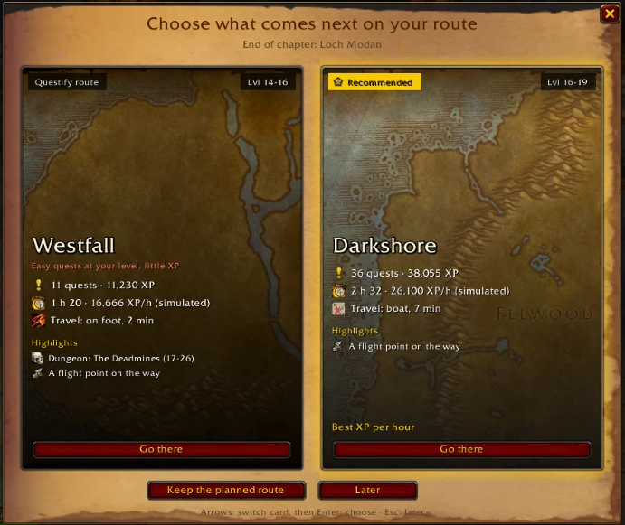

At the end of a chapter that several zones can follow, Questify shows one card per zone: levels, quests and turn-in XP, simulated time and XP per hour, travel and highlights.
The recommended card glows, with its reason. Arrows switch card, Enter picks it. /qf route or “Change route” in the journal opens it again.
End of Loch Modan: Westfall or Darkshore.
